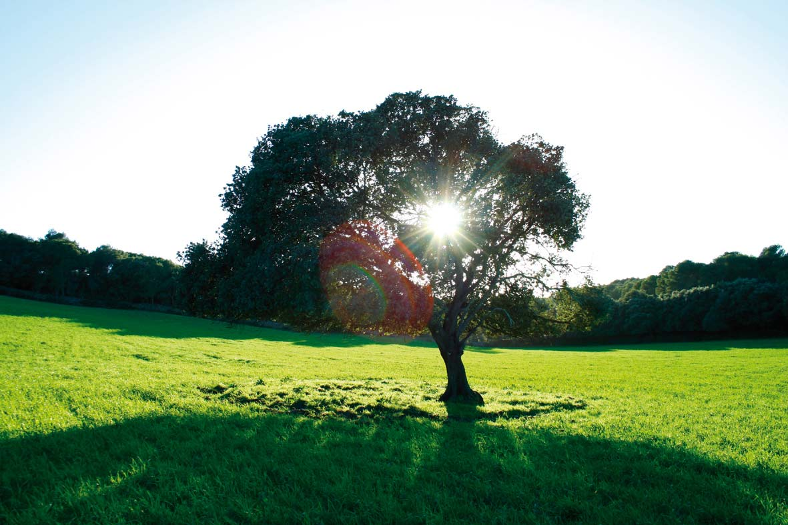

Agricultura - Ramaderia. El paisatge modelat… i desitjable
 Per al nouvingut, la imatge més indeleble del paisatge rural de Menorca és la infinita retícula de paret seca amb les seves barreres d'ullastre; una manera austera i enginyosa d'aprofitar un recurs abundant (la pedra) i de conciliar el maneig de les sementeres amb el pasturatge del bestiar.
Per al nouvingut, la imatge més indeleble del paisatge rural de Menorca és la infinita retícula de paret seca amb les seves barreres d'ullastre; una manera austera i enginyosa d'aprofitar un recurs abundant (la pedra) i de conciliar el maneig de les sementeres amb el pasturatge del bestiar.
Des de la prehistòria, l'agricultura menorquina s'especialitzà en la faceta ramadera. No en va, els antics navegants grecs de la Mediterrània la denominaren Meloussa (terra del bestiar). Tant en l'Edat Mitjana com durant la dominació britànica del segle XVIII el predomini fou de la ramaderia ovina, i la llana era molt apreciada en els mercats europeus. En el segle XX s'arribà a una hegemonia gairebé total del bestiar boví i que es prolonga fins als nostres dies. Com a producte estrella es manté el formatge artesà, que s'elabora sense motlle mitjançant una tècnica senzilla però efectiva: esprement la quallada dins el fogasser (una tela manejada amb destresa pel pagès o pagesa), fet que dóna lloc a unes peces de forma quadrangular i de cantons arrodonits. Així mateix, és la matèria primera de la manufactura de formatgets fosos.
A part de la producció de formatge, la càrnica continua essent clau en l’actualitat, tant de vedella, com de be o de porc; aquesta ultima amb l’elaboració tradicional dels productes típics de les matances, embotits tals com la sobrassada, el camot o cuixot i el botifarró.
 La climatologia menorquina, marcada per l'íntima proximitat marítima i la influència del vent de tramuntana, li concedeix a la collita d'aquesta terra un sabor particular que, juntament amb el peix i marisc de les seves aigües cristal•lines, constitueixen la base d'una gastronomia particularment exquisida.
La climatologia menorquina, marcada per l'íntima proximitat marítima i la influència del vent de tramuntana, li concedeix a la collita d'aquesta terra un sabor particular que, juntament amb el peix i marisc de les seves aigües cristal•lines, constitueixen la base d'una gastronomia particularment exquisida.
Existeix una àmplia coincidència en apreciar que l'esforç secular dels homes i dones del camp menorquí, excepcionalment preservat dins l'àmbit de la Mediterrània occi-dental, constitueix la base de la declaració per la UNESCO del conjunt de Menorca com a Reserva de la Biosfera l'any 1993.
 L'agricultura actual s'orienta de cara al futur. Estan ressorgint produccions recupe-rades de l'oblit, com el vi, l'oli i la mel, alhora que n'emergeixen d'altres més inno-vadores. Tot això emmarcat en una progressiva implementació de l'agricultura eco-lògica. Només queden pendents per millorar la seva comercialització i l'extensió de les denominacions d'origen que permetin valorar-los en la seva justa mesura.
L'agricultura actual s'orienta de cara al futur. Estan ressorgint produccions recupe-rades de l'oblit, com el vi, l'oli i la mel, alhora que n'emergeixen d'altres més inno-vadores. Tot això emmarcat en una progressiva implementació de l'agricultura eco-lògica. Només queden pendents per millorar la seva comercialització i l'extensió de les denominacions d'origen que permetin valorar-los en la seva justa mesura.